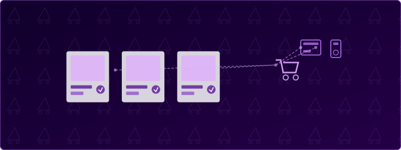
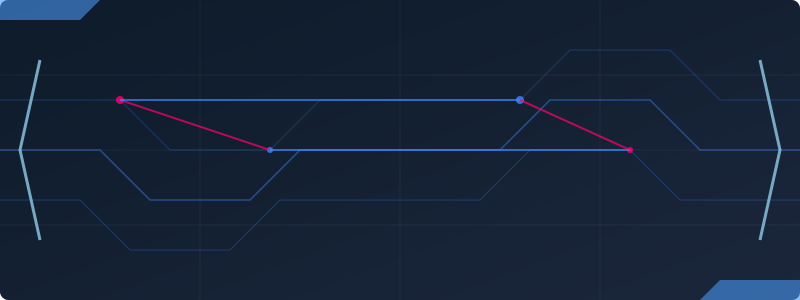
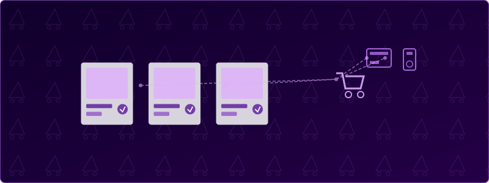
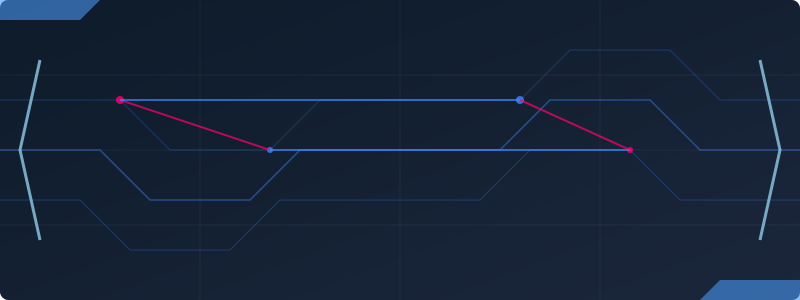
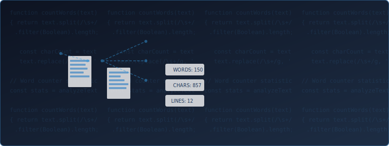

Portfolio
This portfolio — the one you are currently viewing — is also counted as one of my projects. It was a personal challenge I set for myself: to build a visually appealing portfolio that could also serve as a CV by using basic HTML & CSS. The project can easily be explored by simply scrolling through the page. Its main purpose is to provide a front-end showcase of my skills and experience.

 




WordCounter
A text analysis tool I developed to count words, characters and provide readability metrics for text content. This project demonstrates my front-end development skills and my ability to implement practical web applications with a focus on user experience.

E-commerce App
A fully functional e-commerce application with product catalog, shopping cart, and checkout features. This project showcases my ability to create dynamic web applications with user authentication and database integration.